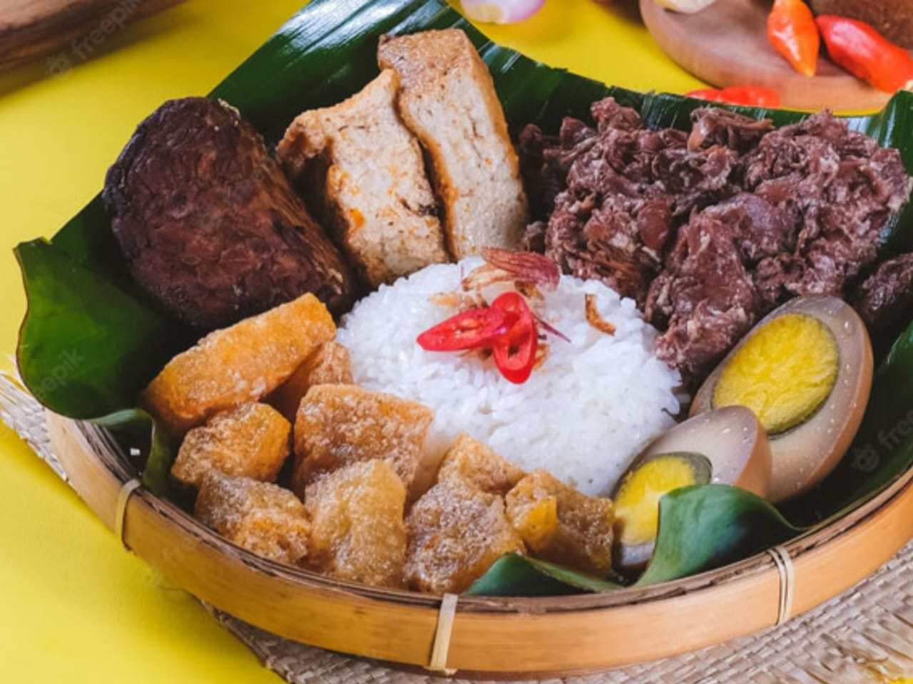
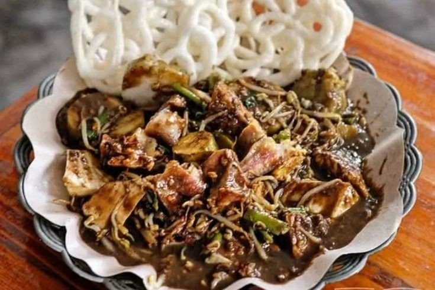
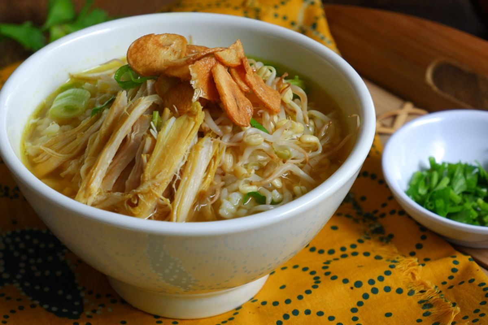
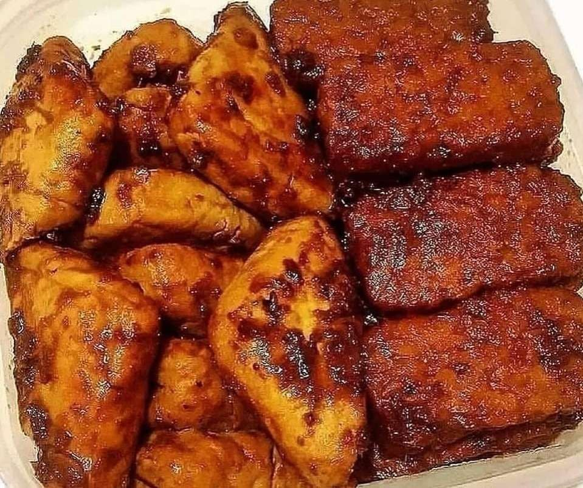
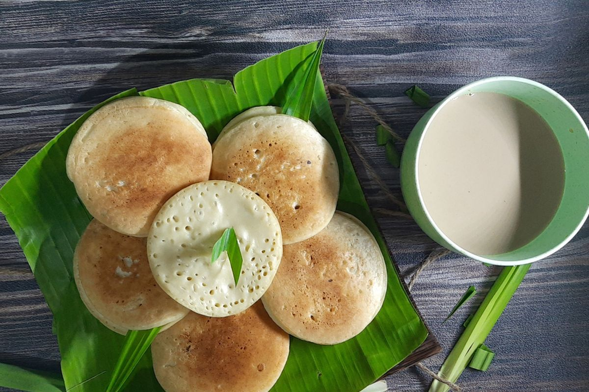

Gudeg
Masakan khas Yogyakarta berbahan nangka muda dengan cita rasa manis.

Rawon
Sup daging khas Jawa Timur dengan kuah hitam dari kluwek.

Rujak Cingur
Makanan tradisional Surabaya berbahan sayuran dan cingur dengan bumbu petis.

Soto Kudus
Kuah bening khas Jawa Tengah dengan suwiran ayam atau kerbau.

Tahu & Tempe Bacem
Makanan manis gurih khas Jawa Tengah yang direndam bumbu gula jawa.

Serabi
Kue tradisional dari tepung beras, populer di Jawa Barat.